I MISHANG MALAYSIA · CONTENT STUDIO
内容策划 Dashboard
90 条可编辑内容草案 · 推广 / 护肤知识 / 美容师口播
30 / 30
粉霜商品帖保湿面膜帖精华油帖AI 肌肤检测帖
内容审批流程 ① 接受内容，加入作图队列 → ② 我制作图片并给你预览 → ③ 你同意图片后申请排期 → ④ 发布前通过 Telegram 再向你确认。
按钮会记录每条内容的审批进度。接受内容后，请在聊天里告诉我编号，我才能针对它启动作图。
按钮会记录每条内容的审批进度。接受内容后，请在聊天里告诉我编号，我才能针对它启动作图。